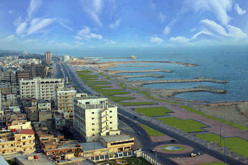

محافظة طرطوس
: تفاصيل عن محافظة طرطوس
طرطُوس، هي مدينة ساحلية رئيسية على ساحل البحر الأبيض المتوسط في سوريا. وهي ثاني أكبر مدينة ساحلية في سوريا، وأكبر مدينة في محافظة طرطوس.
وتقع على خط طول 35.89 درجة وخط عرض 34.89 درجة وترتفع حوالي 20 متر عن سطح البحر. كانت طرطوس حتى سبعينيات القرن العشرين ضمن محافظة اللاذقية، ثم أصبحت محافظة منفصلة
